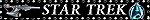
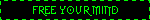
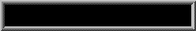
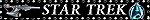
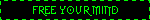
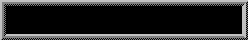

KISS MY BATTERY!
Hi! My name's Blue. I love science (real and fictional), video games, art and horror. I go by any pronouns. This site is a collection of everything I'm passionate about including my infrequent edutainment content under Bacteriorage, a small art portfolio, a long-form blog and a collection of shrines/essays/pages where I ramble about things I'm passionate about. Hopefully at least some of it appeals to you!
Oh, and this site is optimised for PC but should be tolerable on mobile! At least, to the best of my limited ability.
If you want a notification whenever the site updates, follow me on Neocities! And if you want to link to me, here's my site button. (As per usual, please download it and host it yourself instead of linking to mine! Many thanks.)
Latest Site Update: New shrine thingy about Splatoon! Also, new blog entry.
The Bits and Bobs Drawer
I made some Sporcle quizzes and didn't know where else to link them! Give them a try!
Some great sites:


Webrings
Blinkie Containment Zone


 
